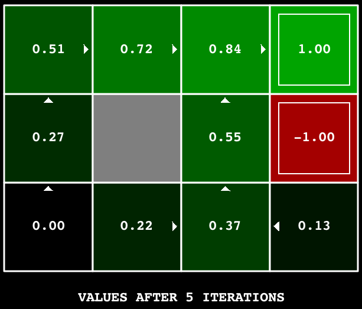
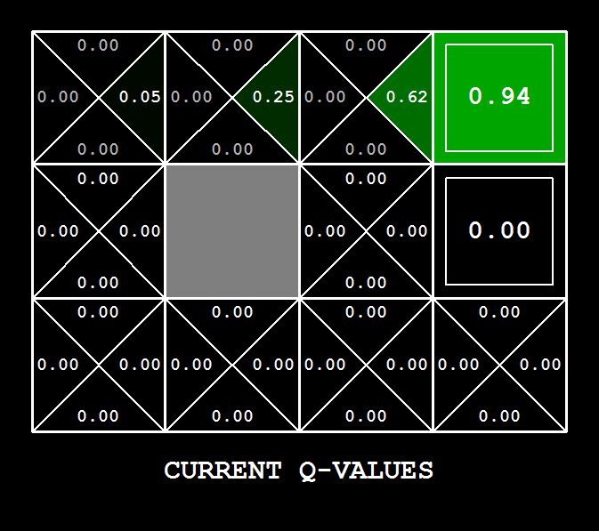

TP 4 : Apprentissage par renforcement
Introduction
Dans ce projet, vous implémenterez les algorithmes Value-Iteration et Q-learning. Vous testerez vos agents d'abord sur Gridworld, puis vous les appliquerez à un contrôleur de robot simulé (Crawler) et à Pacman.
Ce projet sert d'introduction à l'apprentissage par renforcement.
Le code pour ce projet contient les fichiers ci-dessous, disponibles dans un fichier compressé.
| Les fichiers que vous allez éditer : | |
valueIterationAgents.py |
Un agent qui implemente l'algorithme d'itération par valeurs pour résoudre des MDP connus. |
qlearningAgents.py |
Agents qui implemente l'algorithmee Q-Learning pour Gridworld, Crawler et Pacman |
analysis.py |
Un fichier pour mettre vos réponses aux questions données dans le projet. |
model.py |
Deep Q Network pour aider pacman à calculer les valeurs Q dans pour des larges MDPs. |
| Des fichiers que vous devez lire mais PAS éditer : | |
mdp.py |
Définit les méthodes sur les MDPs. |
learningAgents.py |
Définit les classes de base ValueEstimationAgent and QLearningAgent, que vos agents vont étendre. |
util.py |
Divers fonctions util.Counter, particulièrement utile pour les Q-learners. |
gridworld.py |
L'implémentation de Gridworld. |
featureExtractors.py |
Classes pour extraire des attributs sur des paires (état, action). Utilisé pour l'agent Q-learning approximatif (dans qlearningAgents.py). |
deepQLearningAgents.py |
Boucle d'entrainement pour l'agent Q-learning. |
Fichiers à modifier et soumettre : vous devez remplir les sections manquantes du fichier
valueIterationAgents.py, qlearningAgents.py, analysis.py, model.py. Veuillez ne pas modifier les autres fichiers.
Évaluation : l'auto-correcteur s'assure du bon fonctionnement de votre code. Ne changez aucun nom de fonction ou nom de classe dans le code, sans quoi l'auto-correcteur ne fonctionnera pas. L'auto-correcteur ne détermine pas entièrement votre résultat final. La qualité de votre implémentation - et non les résultats obtenus par l'auto-correcteur - déterminent votre résultat final.
Utilisation des données : une partie des notes obtenues dépend de la performance de votre modèle sur l'ensemble de test. La base de code n'offre aucun API permettant d'accéder à cet ensemble directement. Par conséquent, toute tentative de modification des données de test sera considéré de la tricherie et sera sévèrement pénalisé en conséquence.
Aide : N'hésitez pas à contacter les assistants à l'enseignement pour ce cours afin de vous aider dans le travail.
Plagiat :
Nous prendrons soin de vérifier votre code par rapport aux autres soumissions de la classe afin de détecter toute redondance logique.
Tout cas de plagiat sera sanctionné adéquatement. Voir le document informatif du Groupe de travail antiplagiat de l’Université de Sherbrooke à cet effet.
Vous utiliserez l'autogradeur avec les commandes suivantes pour évaluer vos solutions :
python autograder.py
Il peut être exécuté pour une question particulière, telle que la q2, par :
python autograder.py -q q2
Il peut être exécuté pour un test particulier par des commandes de la forme :
python autograder.py -t test_cases/q2/1-bridge-grid
MDPs
Pour commencer, lancez Gridworld en mode de contrôle manuel, qui utilise les touches de direction :
python gridworld.py -m
Note: Quand vous utilisez la direction haut, l'agent se déplace vers le nord 80% du temps.
Vous pouvez contrôler de nombreux aspects de la simulation. Une liste complète d'options est disponible en exécutant :
python gridworld.py -h
L'agent par défaut se déplace de manière aléatoire
python gridworld.py -g MazeGrid
Question 1 : Value Iteration
Rappelons l'équation de mise à jour de la valeur d'un l'état:

Implémentez un agent ValueIterationAgent, qui a été partiellement spécifié pour vous dans valueIterationAgents.py. Votre agent est un planificateur hors-ligne, pas un agent d'apprentissage par renforcement, et donc l'option pertinente pour l'entraînement est le nombre d'itérations qu'il doit exécuter (option -i) dans sa phase de planification initiale. L'agent ValueIterationAgent prend en parametre un MDP et exécute l'algorithme Value iteration pour le nombre d'itérations spécifié avant la fin de l'exécution du constructeur.
Vous allez donc implémenter les méthodes suivantes:
runValueIterationcomputeActionFromValues(state): calcule la meilleure action selon la fonction d'utilité donnée parself.values.computeQValueFromValues(state, action): retourne les Q-value pour les pairs (state, action) selon la fonction d'utilité donnée parself.values.
Ces quantités sont toutes affichées dans l'interface graphique : les valeurs sont des nombres dans des carrés, les Q-values sont des nombres dans des quarts de carré, et les politiques sont des flèches partant de chaque carré.
Important : utilisez la version "batch" de l'itération des valeurs où chaque vecteur $V_{k-1}$ est calculé à partir d'un vecteur fixe, et non la version "online" où un seul vecteur de poids est mis à jour à la place. Cela signifie que lorsque la valeur d'un état est mise à jour dans l'itération $k$ sur la base des valeurs de ses états successeurs, les valeurs des états successeurs utilisées dans le calcul de la mise à jour de la valeur doivent être celles de l'itération $k-1$ (même si certains des états successeurs ont déjà été mis à jour dans l'itération $k$). Cette différence est discutée dans Sutton & Barto au chapitre 4.1, page 91.
Astuce : Vous pouvez éventuellement utiliser la classe util.Counter dans util.py, qui est un dictionnaire avec une valeur par défaut de zéro. Cependant, faites attention avec argMax : l'argmax que vous voulez peut être une clé qui n'est pas dans counter !
Note : Assurez-vous de gérer le cas où un état n'a aucune action disponible dans un MDP (pensez à ce que cela signifie pour les futures récompenses).
Pour tester votre implémentation, exécutez l'autograde :
python autograder.py -q q1
La commande suivante charge votre ValueIterationAgent, qui calculera une politique et l'exécutera 10 fois. Appuyez sur une touche pour défiler sur les utilités, les Q-values et la simulation. Vous devriez constater que la valeur de l'état de départ (V(start), que vous pouvez lire dans l'interface graphique) et la récompense moyenne empirique résultante (imprimée après la fin des 10 tours d'exécution) sont assez proches.
python gridworld.py -a value -i 100 -k 10
Sur la BookGrid par défaut, l'exécution de l'algorithme avec 5 itérations devrait vous donner ce résultat :
python gridworld.py -a value -i 5

Barème
| Critère | Points |
| Code fonctionnel | 5 |
| Qualité / lisibilité du code | 1 |
| Total | 6 |
Question 2 : Politiques
Considérons la grille DiscountGrid, illustrée ci-dessous. Cette grille comporte deux états terminaux avec un gain positif (dans la rangée du milieu), une sortie proche avec un gain de +1 et une sortie éloignée avec un gain de +10. La rangée inférieure de la grille est constituée d'états terminaux avec un gain négatif (en rouge) ; chaque état de cette région "falaise" a un gain de -10. L'état de départ est le carré jaune. Nous distinguons deux types de chemins : (1) les chemins avec risque---déplacement près de la ligne inférieure de la grille ; ces chemins sont plus courts mais risquent de gagner un gain négatif important, et sont représentés par la flèche rouge dans la figure ci-dessous. (2) les chemins qui "évitent la falaise" et se déplacent le long du bord supérieur de la grille. Ces chemins sont plus longs mais risquent moins d'entraîner d'énormes gains négatifs. Ces chemins sont représentés par la flèche verte dans la figure ci-dessous.

Dans cette question, vous choisirez les paramètres de discount, noise, et living reward pour ce MDP afin de produire des politiques optimales de plusieurs types différents. Votre réglage des valeurs des paramètres pour chaque partie doit avoir la propriété que, si votre agent suivait sa politique optimale dans le MDP, il présenterait le comportement donné. Si un comportement particulier n'est pas obtenu pour n'importe quel réglage des paramètres, affirmez que la politique est impossible en renvoyant la chaîne "NOT POSSIBLE".
Voici les types de politiques optimales que vous devriez essayer de produire :
- Préférer la sortie proche (+1), risquer la falaise (-10).
- Préférer la sortie proche (+1), mais éviter la falaise (-10)
- Préférer la sortie éloignée (+10), en risquant la falaise (-10)
- Préférer la sortie éloignée (+10), en évitant la falaise (-10)
- Éviter les deux sorties et la falaise (donc un épisode ne devrait jamais se terminer)
Pour vérifier vos réponses, lancez l'autograde :
python autograder.py -q q2
question2a() à question2e() devraient chacune retourner un tuple de 3 éléments (discount, noise, et living reward) dans analysis.py.
Remarque : vous pouvez vérifier vos politiques dans l'interface graphique. Par exemple, avec une réponse correcte à la question 2(a), la flèche dans (0,1) devrait pointer vers l'est, la flèche dans (1,1) devrait également pointer vers l'est, et la flèche dans (2,1) devrait pointer vers le nord.
Barème
| Critère | Points |
| Code fonctionnel | 5 |
| Qualité / lisibilité du code | 1 |
| Explication | 3 |
| Total | 9 |
Question 3 : Q-Learning
Notez que votre agent ValueIterationAgent n'apprend pas réellement à partir de l'expérience. Au contraire, il se base sur son modèle MDP pour arriver à une politique complète avant même d'interagir avec un environnement réel. Lorsqu'il interagit avec l'environnement, il suit simplement la politique précalculée. Cette distinction peut être subtile dans un environnement simulé comme un Gridword, mais elle est très importante dans le monde réel, où le MDP réel n'est pas disponible.
.
Vous allez maintenant implémenter un agent Q-learning, qui fait très peu de choses lors de la construction, mais qui apprend plutôt par essais et erreurs à partir des interactions avec l'environnement grâce à sa méthode update(state, action, nextState, reward). Un stub d'un Q-learner est spécifié dans QLearningAgent dans qlearningAgents.py, et vous pouvez le sélectionner avec l'option '-a q'.
Pour cette question, vous devez implémenter les méthodes update, computeValueFromQValues, getQValue et computeActionFromQValues.
Note : Pour computeActionFromQValues, vous devriez selectionner les actions de façon aléatoire pour un meilleur comportement. La fonction random.choice() vous aidera. Dans un état particulier, les actions que votre agent n'a pas vues auparavant ont toujours une Q-value, spécifiquement une Q-value de zéro, et si toutes les actions que votre agent a vues auparavant ont une valeur Q négative, une action non vue peut être optimale.
Important : Assurez-vous que dans vos fonctions computeValueFromQValues et computeActionFromQValues, vous accédez uniquement aux Q-values en appelant getQValue. Cette abstraction sera utile pour la question 6 lorsque vous remplacerez getQValue pour utiliser les caractéristiques (features) des paires état-action plutôt que les paires état-action directement.
Avec la mise à jour Q-learning en place, vous pouvez regarder votre Q-learner apprendre sous contrôle manuel, en utilisant le clavier :
python gridworld.py -a q -k 5 -m
Rappelez-vous que -k contrôle le nombre d'épisodes que votre agent peut apprendre. Observez comment l'agent apprend sur l'état dans lequel il se trouvait, et non sur celui vers lequel il se déplace, et "laisse l'apprentissage dans son sillage".
Conseil : pour faciliter le débogage, vous pouvez désactiver le bruit en utilisant le paramètre --noise 0.0 (bien que cela rende évidemment l'apprentissage Q-learning moins intéressant). Si vous dirigez manuellement Pacman vers le nord puis vers l'est le long du chemin optimal pendant quatre épisodes, vous devriez voir les valeurs Q suivantes :

Evaluation : Nous allons exécuter votre agent Q-learning et vérifier qu'il apprend les mêmes valeurs Q et la même politique que notre implémentation de référence lorsqu'on lui présente le même ensemble d'exemples.
Pour évaluer votre implémentation, exécutez l'autograde :
python autograder.py -q q3
Barème
| Critère | Points |
| Code fonctionnel | 5 |
| Qualité / lisibilité du code | 1 |
| Total | 6 |
Question 4 : Epsilon Greedy
Complétez votre agent Q-learning en implémentant la sélection d'action epsilon-greedy dans getAction, ce qui signifie qu'il choisit des actions aléatoires pour une fraction epsilon du temps, et suit ses meilleures valeurs Q actuelles dans le cas contraire. Notez que le choix d'une action aléatoire peut aboutir au choix de la meilleure action - c'est-à-dire que vous ne devriez pas choisir une action sous-optimale aléatoire, mais plutôt toute action légale aléatoire.
Vous pouvez choisir un élément d'une liste uniformément au hasard en appelant la fonction random.choice. Vous pouvez simuler une variable binaire avec une probabilité p de succès en utilisant util.flipCoin(p), qui renvoie True avec la probabilité p et False avec la probabilité 1-p.
Après avoir implémenté la méthode getAction, observez le comportement suivant de l'agent dans gridworld (avec epsilon = 0,3).
python gridworld.py -a q -k 100
Vos valeurs Q finales devraient ressembler à celles de votre agent ValueIterationAgent, surtout le long des chemins bien fréquentés. Cependant, vos gain moyens seront inférieurs aux valeurs Q prédites en raison des actions aléatoires et de la phase d'apprentissage initiale.
Vous pouvez également observer les simulations suivantes pour différentes valeurs d'epsilon. Ce comportement de l'agent correspond-il à ce que vous attendez ?
python gridworld.py -a q -k 100 --noise 0.0 -e 0.1
python gridworld.py -a q -k 100 --noise 0.0 -e 0.9
Pour tester votre implémentation, exécutez :
python autograder.py -q q4
Sans code supplémentaire, vous devriez maintenant être en mesure d'exécuter un robot crawler Q-learning :
python crawler.py
Si cela ne fonctionne pas, vous avez probablement écrit un code trop spécifique au problème du GridWorld et vous devriez le rendre plus général à tous les MDP.
Ceci lancera le crawling robot de la classe en utilisant votre Q-learner. Jouez avec les différents paramètres d'apprentissage pour voir comment ils affectent les politiques et les actions de l'agent. Notez que le délai est un paramètre de la simulation, tandis que le taux d'apprentissage et l'epsilon sont des paramètres de votre algorithme d'apprentissage, et le facteur d'actualisation(discount) est une propriété de l'environnement.
Barème
| Critère | Points |
| Code fonctionnel | 2 |
| Total | 2 |
Question 5 (1 point): Q-Learning et Pacman
Il est temps de jouer à Pacman ! Pacman va jouer à des jeux en deux phases. Dans la première phase, l'entraînement, Pacman commencera à apprendre les valeurs des positions et des actions. Comme il faut beaucoup de temps pour apprendre des valeurs Q précises, même pour des grilles minuscules, l'entraînement de Pacman fonctionnent par défaut en mode silencieux, sans affichage de l'interface graphique (ou console). Une fois l'entraînement de Pacman terminé, il passe en mode test. Lors du test, les paramètres self.epsilon et self.alpha de Pacman sont fixés à 0.0, ce qui a pour effet d'arrêter Q-learning et de désactiver l'exploration, afin de permettre à Pacman d'exploiter sa politique apprise. Les jeux de test sont affichés dans l'interface graphique par défaut. Sans aucun changement de code, vous devriez être capable de faire fonctionner Pacman en Q-learning pour des grilles très petites comme suit :
python pacman.py -p PacmanQAgent -x 2000 -n 2010 -l smallGrid
Notez que PacmanQAgent est déjà défini pour vous en termes de QLearningAgent que vous avez déjà écrit. L'agent PacmanQAgent est seulement différent en ce qu'il a des paramètres d'apprentissage par défaut qui sont plus efficaces pour le problème Pacman (epsilon=0.05, alpha=0.2, gamma=0.8). Vous recevrez un crédit complet pour cette question si la commande ci-dessus fonctionne sans exception et que votre agent gagne au moins 80% du temps. L'autograde exécutera 100 parties de test après les 2000 parties d'entraînement.
Conseil : Si votre QLearningAgent fonctionne pour gridworld.py et crawler.py mais ne semble pas apprendre une bonne politique pour Pacman sur smallGrid, c'est peut-être parce que vos méthodes getAction et/ou computeActionFromQValues ne prennent pas correctement en compte, dans certains cas, les actions non vues. En particulier, comme les actions non vues ont par définition une valeur Q de zéro, si toutes les actions qui ont été vues ont des valeurs Q négatives, une action non vue peut être optimale. Méfiez-vous de la fonction argmax de util.Counter !
python autograder.py -q q5
Note : Si vous voulez expérimenter avec les paramètres d'apprentissage, vous pouvez utiliser l'option -a, par exemple -a epsilon=0.1,alpha=0.3,gamma=0.7. Ces valeurs seront alors accessibles comme self.epsilon, self.gamma et self.alpha à l'intérieur de l'agent.
Note : Bien qu'un total de 2010 parties soit joué, les 2000 premières parties ne seront pas affichées à cause de l'option -x 2000, qui désigne les 2000 premières parties pour l'entraînement (pas de sortie). Ainsi, vous ne verrez Pacman jouer que les 10 dernières de ces parties. Le nombre de parties d'entraînement est également transmis à votre agent par l'option numTraining.
Note : Si vous voulez regarder 10 matchs d'entraînement pour voir ce qui se passe, utilisez la commande :
python pacman.py -p PacmanQAgent -n 10 -l smallGrid -a numTraining=10
Pendant l'entraînement, vous verrez toutes les 100 parties une sortie avec des statistiques sur la façon dont Pacman s'en sort. Epsilon est positif pendant l'entraînement, donc Pacman jouera mal même après avoir appris une bonne politique : c'est parce qu'il fait occasionnellement un mouvement exploratoire aléatoire dans un fantôme. À titre de référence, il devrait falloir entre 1000 et 1400 parties avant que les récompenses de Pacman pour un segment de 100 épisodes deviennent positives, reflétant le fait qu'il a commencé à gagner plus qu'à perdre. À la fin de l'entraînement, elle devrait rester positive et être assez élevée (entre 100 et 350).
Assurez-vous de bien comprendre ce qui se passe ici : l'état MDP est la configuration exacte du plateau à laquelle Pacman fait face, avec les transitions maintenant complexes qui décrivent un niveau entier de changement vers cet état. Les configurations de jeu intermédiaires dans lesquelles Pacman a bougé mais les fantômes n'ont pas répondu ne sont pas des états MDP, mais sont intégrées dans les transitions.
Une fois que Pacman a fini de s'entraîner, il devrait gagner de manière très fiable dans les jeux tests (au moins 90 % du temps), puisqu'il exploite maintenant sa politique apprise.
Cependant, vous constaterez que l'entraînement du même agent sur la grille moyenne mediumGrid, apparemment simple, ne fonctionne pas bien. Dans notre implémentation, les récompenses moyennes de Pacman restent négatives tout au long de l'entraînement. Au moment du test, il joue mal, perdant probablement toutes ses parties de test. L'entraînement prend également beaucoup de temps, malgré son inefficacité.
Pacman ne parvient pas à gagner sur les grands tableaux parce que chaque configuration du tableau est un état distinct avec des valeurs Q distinctes. Il n'a aucun moyen de généraliser que tomber sur un fantôme est mauvais pour toutes les positions. De toute évidence, cette approche n'est pas transposable.
Question 6 : Q-Learning approximatif
Implémentez un agent Q-learnig qui apprend les poids des attributs(features) des états, où plusieurs états peuvent partager les mêmes attributs. Écrivez votre implémentation dans la classe ApproximateQAgent dans qlearningAgents.py, qui est une sous-classe de PacmanQAgent.
Remarque : Q-learning approximatif suppose l'existence d'une fonction d'attribut
$f(s,a)$ sur les paires d'états et d'actions, ce qui donne un vecteur $[f_1(s,a), \ …, \ f_i(s,a), \ …, \ f_n(s,a)]$ de valeurs des attributs. Nous fournissons des fonctions de attributs pour vous dans featureExtractors.py. Les vecteurs d'attributs sont des objets util.Counter (comme un dictionnaire) contenant les paires non nulles de caractéristiques et de valeurs ; toutes les caractéristiques omises ont la valeur zéro.
La fonction Q-function approximative prend la forme suivante :
$$Q(s, a)=\sum_{i=1}^{n} f_{i}(s, a) w_{i}$$où chaque poids $w_i$ est associé à une caractéristique particulière $f_i(s,a)$. Dans votre code, vous devez implémenter le vecteur de poids comme un dictionnaire faisant correspondre les caractéristiques(attributs) (que les extracteurs de caractéristiques renverront) aux valeurs de poids. Vous mettrez à jour vos vecteurs de poids de la même manière que vous avez mis à jour les valeurs Q-values :
$$\begin{array}{c}{w_{i} \leftarrow w_{i}+\alpha \cdot \text {difference} \cdot f_{i}(s, a)} \\ {\text {difference}=\left(r+\gamma \max _{a^{\prime}} Q\left(s^{\prime}, a^{\prime}\right)\right)-Q(s, a)}\end{array}$$
Notez que le terme $difference$ est le même que dans Q-learning normal, et que $r$ est l'espérance de la récompense.
Par défaut, ApproximateQAgent utilise IdentityExtractor, qui attribue une seule caractéristique à chaque paire (state,action). Avec cet extracteur de caractéristiques, votre agent Q-learning approximatif devrait fonctionner de manière identique à PacmanQAgent. Vous pouvez le tester avec la commande suivante :
python pacman.py -p ApproximateQAgent -x 2000 -n 2010 -l smallGrid
Important : ApproximateQAgent est une sous-classe de QLearningAgent, et il partage donc plusieurs méthodes comme getAction. Assurez-vous que vos méthodes dans QLearningAgent appellent getQValue au lieu d'accéder directement aux valeurs Q, afin que lorsque vous surchargez getQValue dans votre agent approximatif, les nouvelles valeurs Q approximatives soient utilisées pour calculer les actions.
Une fois que vous êtes sûr que votre agent d'apprentissage approximatif fonctionne correctement avec les caractéristiques d'identité, exécutez votre agent Q-learning approximatif avec notre extracteur de caractéristiques personnalisé, qui peut apprendre à gagner avec facilité :
python pacman.py -p ApproximateQAgent -a extractor=SimpleExtractor -x 50 -n 60 -l mediumGrid
Même les grids beaucoup plus grandes ne devraient pas poser de problème à votre agent ApproximateQAgent (attention : l'entraînement peut prendre quelques minutes) :
python pacman.py -p ApproximateQAgent -a extractor=SimpleExtractor -x 50 -n 60 -l mediumClassic
Si vous n'avez pas d'erreurs, votre agent Q-learning approximatif devrait gagner presque à chaque fois avec ces caractéristiques simples, même avec seulement 50 jeux d'entraînement.
Evaluation : Nous allons exécuter votre agent Q-learning approximatif et vérifier qu'il apprend les mêmes valeurs Q et les mêmes poids de caractéristiques que notre implémentation de référence lorsque chacun est présenté avec le même ensemble d'exemples. Pour évaluer votre implémentation, exécutez :
python autograder.py -q q6
Barème
| Critère | Points |
| Code fonctionnel | 3 |
| Qualité / lisibilité du code | 1 |
| Total | 4 |
Question 7 : Deep Q-Learning
Pour la question finale, vous combinerez les concepts de l'apprentissage Q-learning de ce TP et du ML du projet TP2. Dans model.py, vous implémenterez DeepQNetwork, qui est un réseau neuronal qui prédit les valeurs Q pour toutes les actions possibles en fonction d'un état.
Vous allez implémenter les fonctions suivantes ::
__init__(): Comme dans au TP2, vous allez initialiser tous les paramètres de votre réseau neuronal ici. Vous devez également initialiser les variables suivantes :self.parameters: Une liste contenant tous vos paramètres dans l'ordre de votre forward pass.self.learning_rate: utiliser dansgradient_update().self.numTrainingGames: Le nombre de parties que Pacman jouera pour collecter des transitions et apprendre ses valeurs Q ; notez que ce nombre devrait être supérieur à 1000, car les 1000 premières parties environ sont utilisées pour l'exploration et ne sont pas utilisées pour mettre à jour le réseau Q.self.batch_size: Le nombre de transitions que le modèle doit utiliser pour chaque mise à jour du gradient. L'autograde utilisera cette variable ; vous ne devriez pas avoir besoin d'accéder à cette variable après l'avoir définie.
get_loss(): Renvoie la perte au carré entre les valeurs Q prédites (produites par votre réseau), et les Q_targets (que vous traiterez comme la vérité terrain).run(): Similaire à la méthode du même nom dans le TP2, où vous retournerez le résultat d'une passe avant à travers votre réseau de neurones. (La sortie devrait être un vecteur de taille (batch_size, num_actions), puisque nous voulons retourner la valeur Q pour toutes les actions possibles étant donné un état).gradient_update(): Itérer à traversself.parameterset mettre à jour chacun d'entre eux en fonction des gradients calculés. Cependant, contrairement au TP2, vous n'itérez pas sur l'ensemble des données dans cette fonction, et vous ne mettez pas à jour les paramètres de façon répétée jusqu'à convergence. Cette fonction ne doit effectuer qu'une seule mise à jour du gradient pour chaque paramètre. L'autograde appellera cette fonction à plusieurs reprises pour mettre à jour votre réseau.
Pour votre compréhension conceptuelle : Les Q_targets sont calculés pour chaque échantillon (s, a, r, s') en "bootstrappant" votre modèle avec l'équation suivante
$$Q_{target}(s, a) = r(s, a, s') + (1 - done) \gamma \max_{a'} \hat{Q}(s', a') $$
Où la variable $done$ indique si un épisode est terminé ou non (Pacman gagne ou perd après avoir effectué une action $a$ de l'état $s$, et $\hat{Q}$ est votre réseau Q. Notez les similitudes entre la formule Q_{target} dans Q-learning approximatif et Deep Q learning.
Évaluation : Nous ferons rouler votre agent Pacman Deep Q-Learning pendant 10 parties après que votre agent se soit entraîné sur les parties self.numTrainingGames. Si votre agent gagne au moins 6/10 des parties, vous recevrez la note complète. Si votre agent gagne au moins 8/10 des parties, vous recevrez 2 points de de plus. Veuillez noter que Deep Q-learning n'est pas connu pour sa stabilité, malgré certaines des astuces qui ont été implémentées dans la boucle d'entraînement backend. Le nombre de parties gagnées par votre agent peut varier pour chaque exécution. Pour obtenir les points supplémentaires, votre implémentation doit constamment dépasser le seuil de 80%.
python autograder.py -q q7
python pacman.py -p PacmanDeepQAgent -x [numGames] -n [numGames + 10] -l testClassic
Barème
| Critère | Points |
| Code fonctionnel | 6 |
| Qualité / lisibilité du code | 1 |
| Total | 7 |
Les équipes:
| Membre 1 | Membre 2 |
|---|---|
| Rouabah, Lokman | Boutin, Karl |
| Tétreault, Etienne | Charbonneau, Victor |
| Boulanger, Bastien | Dia, Adam |
| Ménard Tétreault, Yuhan | Lessard, Nathan |
| Girard Hivon, Maxime | Bergeron, Marc-Olivier |
| Yahya, Mohamed | Philion, Guillaume |
| Crozet, Thomas | Mailhot, Christophe |
| Krid, Ahmed Bahaedine | Desfossés, Alexandre |
| Lavallée, Louis | Pion, Raphaël |
| Carignan, Benjamin | Duchesneau, Paul |
| Bellavance, Nicolas | Grenier, Philippe-Olivier |
| Bourgeois, Thomas | Gendreau, Tommy |
| ~ | Allard, Cloé |
| Proulx, Hugo | Pépin, Pierre-Luc |
| Tientcheu Tchako, David Jeeson | Gauthier, Carl |
| Lamothe-Morin, Zoé | Giasson, Frédéric |
| Breton Corona, Eduardo Yvan | Turcotte, Raphaël |